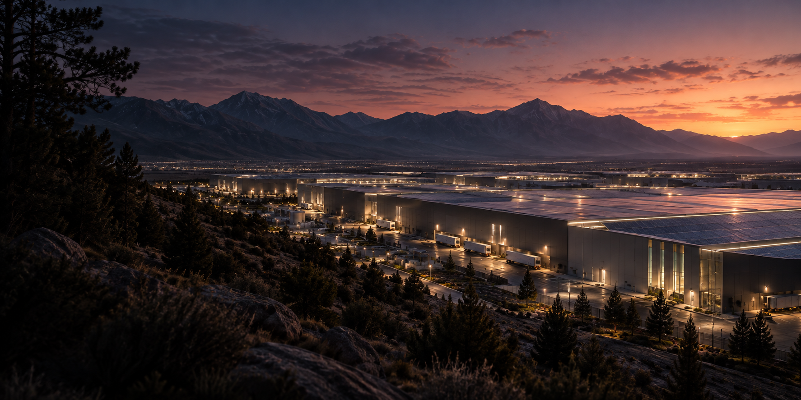

01 / SCOPE NORMALIZATION
The lowest bid,
on the same scope.
Trade A$4.82M
Trade B$4.47M
Trade C$4.91M
Compare inclusions and exclusions before comparing totals.

CONSTRUCTION COST ESTIMATOR
INDUSTRIAL / MISSION-CRITICAL / GLOBAL
Turning design information, quantities, market pricing and risk into clear construction cost decisions.
THOUGHTFUL ESTIMATES.
CONFIDENT DECISIONS.
BETTER INFRASTRUCTURE.
FEATURED WORK REAL PROJECTS. CLEAR COST THINKING.
View all 28 projects ↗THE ESTIMATING PROCESS FROM DESIGN TO DECISION
Explore each stage01 / ABOUT
I’m Avi, a construction estimator with a civil engineering background and experience across Canada and India.
I connect conceptual cost planning with the decisions that follow: trade pricing, procurement, changes and forecasts. My work spans industrial, data center, healthcare, institutional, civil and residential construction.
At Pomerleau, I work on large ICI programs across Construction Management, Design-Build and Lump-Sum delivery. I bring scope discipline, a practical understanding of cost drivers and clear communication to evolving projects.
02 / COMPLETE PROJECT PORTFOLIO
Explore all 28 projects by sector or delivery model. Values are in CAD and describe the overall project or listed package.
No projects match these filters. Try another name or reset the filters.
Project exposure is distinct from personally estimated package value. Dates and project-specific outcomes are included only where supplied.
03 / ESTIMATOR LAB
Four small demonstrations of estimating decisions. All amounts below are fictional examples, separate from project data.
01 / SCOPE NORMALIZATION
Compare inclusions and exclusions before comparing totals.
02 / ESTIMATE MATURITY
03 / VALUE ENGINEERING
04 / TRANSPARENT RISK
Bluebeam Revu · PlanSwift · Excel · Autodesk Construction Cloud / BuildingConnected · Procore · MS Project
04 / EXPERIENCE
Seven-plus years of estimating experience, from measured quantities to complex capital programs.
Class C/B/A estimates, CSA and MEP pricing, bid leveling, value engineering, risk, cash-flow forecasts, GMP and target-price development.
CAD 5M–60M projects. Tender packages, scope reviews and buyout support. Negotiated with 100+ subcontractors and suppliers, securing up to 15% savings on awarded contracts.
25+ residential and commercial estimates, 40+ tender forms and proposal documents, and pricing negotiations with 100+ suppliers.
Civil cost estimates, material and labor build-ups, bid evaluations, tender documentation, RFIs and change requests.
Quantity takeoffs, trade pricing, supplier negotiations and estimate preparation.
Postgraduate Diploma, Construction Project Management
Bachelor of Engineering, Civil Engineering — First Class with Distinction
Diploma, Civil Engineering
CAPM · Procore Certified Estimator
PMI Member · Pursuing PQS designation
05 / WHY TESLA
I want to bring my estimating experience to the infrastructure behind advanced manufacturing and sustainable technology.
Evidence of excellence ↓Data center fit-out and preconstruction exposure, supported by a broader industrial, healthcare and infrastructure portfolio.
Change pricing, actual-versus-budget review and forecasts to completion on the CAD 80M Equinix fit-out.
Comparable bids, clear scope boundaries and value-engineering alternatives that give delivery teams useful choices.
LET’S BUILD WHAT COMES NEXT
Toronto, Ontario · Open to relocation · +1 (437) 984-9856